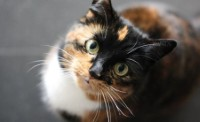
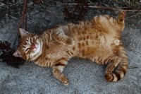
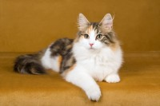

About PCS‑HH
Hi, I’m Harry — a lifelong cat lover based in Hamburg. After years of caring for pets and managing hospitality teams, I founded PCS‑HH to offer reliable, compassionate cat sitting for busy owners.
My goal is simple: to make every cat feel safe, loved, and understood while you’re away. Whether it’s a playful kitten or a senior cat needing medication, I adapt my care to each personality.
With a background in hospitality, training, and structured operations, I bring professionalism, empathy, and consistency to every visit.




